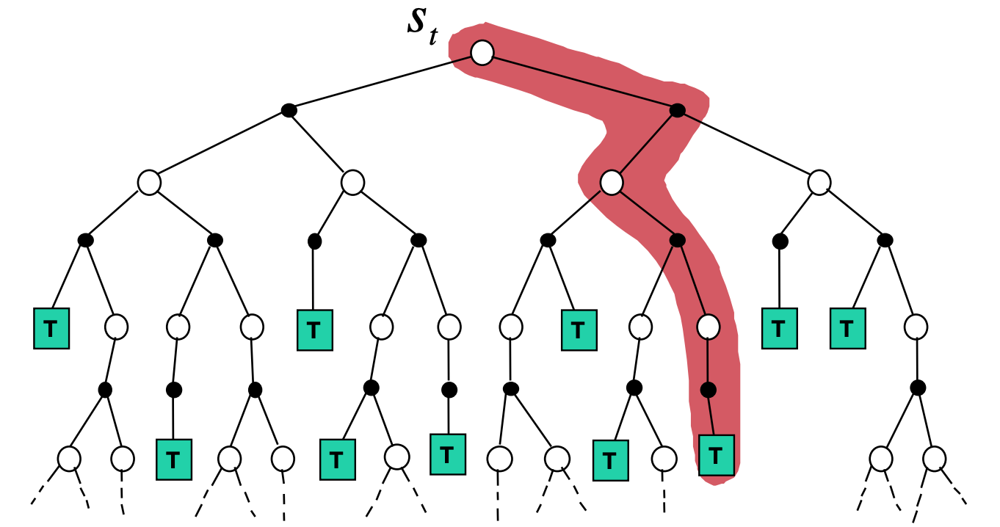
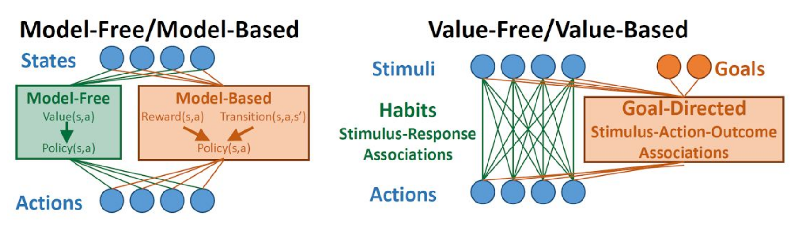
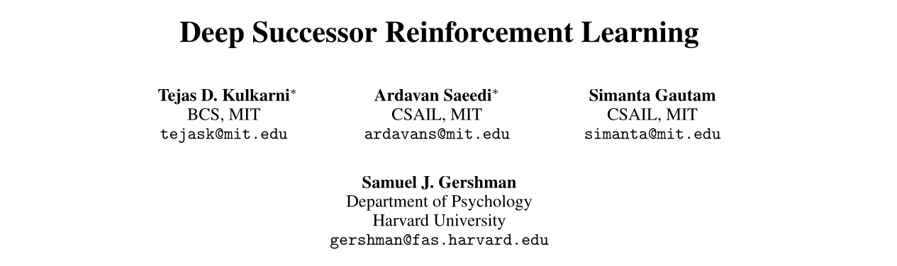

1 - Model-based vs. Model-free
Model-based vs. Model-free
Model-free methods use the reward prediction error (RPE) to update values:
\delta_t = r_{t+1} + \gamma \, V^\pi(s_{t+1}) - V^\pi(s_t)
\Delta V^\pi(s_t) = \alpha \, \delta_t
Encountered rewards propagate very slowly to all states and actions.
If the environment changes (transition probabilities, rewards), they have to relearn everything.
After training, selecting an action is very fast.
Model-based vs. Model-free
Model-based RL can learn very fast changes in the transition or reward distributions:
\Delta r(s_t, a_t, s_{t+1}) = \alpha \, (r_{t+1} - r(s_t, a_t, s_{t+1}))
\Delta p(s' | s_t, a_t) = \alpha \, (\mathbb{I}(s_{t+1} = s') - p(s' | s_t, a_t))
But selecting an action requires planning in the tree of possibilities (slow).

Model-based vs. Model-free
Relative advantages of MF and MB methods:
Model-free
fast
high
yes
no
Model-based
slow
low
as good as the model
yes
A trade-off would be nice… Most MB models in the deep RL literature are hybrid MB/MF models anyway.
Outcome devaluation
Two forms of behavior are observed in the animal psychology literature:
Goal-directed behavior learns Stimulus \rightarrow Response \rightarrow Outcome associations.
Habits are developed by overtraining Stimulus \rightarrow Response associations.
The main difference is that habits are not influenced by outcome devaluation , i.e. when rewards lose their value.
Source: Bernard W. Balleine
Goal-directed / habits = MB / MF ?
The classical theory assigns MF to habits and MB to goal-directed, mostly because their sensitivity to outcome devaluation.

Doll, B. B., Simon, D. A., and Daw, N. D. (2012). The ubiquity of model-based reinforcement learning. Current Opinion in Neurobiology 22, 1075–1081. doi:10.1016/j.conb.2012.08.003.
Miller, K., Ludvig, E. A., Pezzulo, G., and Shenhav, A. (2018). “Re-aligning models of habitual and goal-directed decision-making,” in Goal-Directed Decision Making : Computations and Neural Circuits, eds. A. Bornstein, R. W. Morris, and A. Shenhav (Academic Press)
2 - Successor representations
Successor Representations (SR)
Successor representations (SR) have been introduced to combine MF and MB properties. Let’s split the definition of the value of a state:
\begin{align}
V^\pi(s) &= \mathbb{E}_{\pi} [\sum_{k=0}^\infty \gamma^k \, r_{t+k+1} | s_t =s] \\
&\\
&= \mathbb{E}_{\pi} [\begin{bmatrix} 1 \\ \gamma \\ \gamma^2 \\ \ldots \\ \gamma^\infty \end{bmatrix} \times
\begin{bmatrix} \mathbb{I}(s_{t}) \\ \mathbb{I}(s_{t+1}) \\ \mathbb{I}(s_{t+2}) \\ \ldots \\ \mathbb{I}(s_{\infty}) \end{bmatrix} \times
\begin{bmatrix} r_{t+1} \\ r_{t+2} \\ r_{t+3} \\ \ldots \\ r_{t+\infty} \end{bmatrix}
| s_t =s]\\
\end{align}
where \mathbb{I}(s_{t}) is 1 when the agent is in s_t at time t , 0 otherwise.
The left part corresponds to the transition dynamics : which states will be visited by the policy, discounted by \gamma .
The right part corresponds to the immediate reward in each visited state.
Couldn’t we learn the transition dynamics and the reward distribution separately in a model-free manner?
Successor Representations (SR)
SR rewrites the value of a state into an expected discounted future state occupancy M^\pi(s, s') and an expected immediate reward r(s') by summing over all possible states s' of the MDP:
\begin{align}
V^\pi(s) &= \mathbb{E}_{\pi} [\sum_{k=0}^\infty \gamma^k \, r_{t+k+1} | s_t =s] \\
&\\
&= \sum_{s' \in \mathcal{S}} \mathbb{E}_{\pi} [\sum_{k=0}^\infty \gamma^k \, \mathbb{I}(s_{t+k}=s') \times r_{t+k+1} | s_t =s]\\
&\\
&\approx \sum_{s' \in \mathcal{S}} \mathbb{E}_{\pi} [\sum_{k=0}^\infty \gamma^k \, \mathbb{I}(s_{t+k}=s') | s_t =s] \times \mathbb{E} [r_{t+1} | s_{t}=s']\\
&\\
&\approx \sum_{s' \in \mathcal{S}} M^\pi(s, s') \times r(s')\\
\end{align}
Successor Representations (SR)
The underlying assumption is that the world dynamics are independent from the reward function (which does not depend on the policy).
This allows to re-use knowledge about world dynamics in other contexts (e.g. a new reward function in the same environment): transfer learning .
Source: https://awjuliani.medium.com/the-present-in-terms-of-the-future-successor-representations-in-reinforcement-learning-316b78c5fa3
What matters is the states that you will visit and how interesting they are, not the order in which you visit them.
Knowing that being in the mensa will eventually get you some food is enough to know that being in the mensa is a good state: you do not need to remember which exact sequence of transitions will put food in your mouth.
Successor Representations (SR)
SR algorithms must estimate two quantities:
The expected immediate reward received after each state:
r(s) = \mathbb{E} [r_{t+1} | s_t = s]
The expected discounted future state occupancy (the SR itself):
M^\pi(s, s') = \mathbb{E}_{\pi} [\sum_{k=0}^\infty \gamma^k \, \mathbb{I}(s_{t+k} = s') | s_t = s]
The value of a state s is then computed with:
V^\pi(s) = \sum_{s' \in \mathcal{S}} M(s, s') \times r(s')
what allows to infer the policy (e.g. using an actor-critic architecture).
The immediate reward for a state can be estimated very quickly and flexibly after receiving each reward:
\Delta \, r(s_t) = \alpha \, (r_{t+1} - r(s_t))
SR and transition matrix
Imagine a very simple MDP with 4 states and a single deterministic action:
The transition matrix \mathcal{P}^\pi depicts the possible (s, s') transitions:
\mathcal{P}^\pi = \begin{bmatrix}
0 & 1 & 0 & 0 \\
0 & 0 & 1 & 0 \\
0 & 0 & 0 & 1 \\
0 & 0 & 0 & 1 \\
\end{bmatrix}
The SR matrix M also represents the future transitions discounted by \gamma :
M = \begin{bmatrix}
1 & \gamma & \gamma^2 & \gamma^3 \\
0 & 1 & \gamma & \gamma^2 \\
0 & 0 & 1 & \gamma\\
0 & 0 & 0 & 1 \\
\end{bmatrix}
SR matrix in a Tolman’s maze
The SR represents whether a state can be reached soon from the current state (b) using the current policy.
The SR depends on the policy:
It is therefore different from the transition matrix, as it depends on behavior and rewards.
The exact dynamics are lost compared to MB: it only represents whether a state is reachable, not how.
Example of a SR matrix
The SR matrix reflects the proximity between states depending on the transitions and the policy. it does not have to be a spatial relationship.
Learning the SR
How can we learn the SR matrix for all pairs of states?
M^\pi(s, s') = \mathbb{E}_{\pi} [\sum_{k=0}^\infty \gamma^k \, \mathbb{I}(s_{t+k} = s') | s_t = s]
We first notice that the SR obeys a recursive Bellman-like equation:
\begin{aligned}
M^\pi(s, s') &= \mathbb{I}(s_{t} = s') + \mathbb{E}_{\pi} [\sum_{k=1}^\infty \gamma^k \, \mathbb{I}(s_{t+k} = s') | s_t = s] \\
&= \mathbb{I}(s_{t} = s') + \gamma \, \mathbb{E}_{\pi} [\sum_{k=0}^\infty \gamma^k \, \mathbb{I}(s_{t+k+1} = s') | s_t = s] \\
&= \mathbb{I}(s_{t} = s') + \gamma \, \mathbb{E}_{s_{t+1} \sim \mathcal{P}^\pi(s' | s)} [\mathbb{E}_{\pi} [\sum_{k=0}^\infty \gamma^k \, \mathbb{I}(s_{t+k} = s') | s_{t+1} = s] ]\\
&= \mathbb{I}(s_{t} = s') + \gamma \, \mathbb{E}_{s_{t+1} \sim \mathcal{P}^\pi(s' | s)} [M^\pi(s_{t+1}, s')]\\
\end{aligned}
This is reminiscent of TDM: the remaining distance to the goal is 0 if I am already at the goal, or gamma the distance from the next state to the goal.
Model-based SR
M^\pi(s, s') = \mathbb{I}(s_{t} = s') + \gamma \, \mathbb{E}_{s_{t+1} \sim \mathcal{P}^\pi(s' | s)} [M^\pi(s_{t+1}, s')]
If we know the transition matrix for a fixed policy \pi :
\mathcal{P}^\pi(s, s') = \sum_a \pi(s, a) \, p(s' | s, a)
we can obtain the SR directly with matrix inversion as we did in dynamic programming :
M^\pi = I + \gamma \, \mathcal{P}^\pi \times M^\pi
so that:
M^\pi = (I - \gamma \, \mathcal{P}^\pi)^{-1}
This DP approach is called model-based SR (MB-SR) as it necessitates to know the environment dynamics.
Model-free SR
If we do not know the transition probabilities, we simply sample a single s_t, s_{t+1} transition:
M^\pi(s_t, s') \approx \mathbb{I}(s_{t} = s') + \gamma \, M^\pi(s_{t+1}, s')
We can define a sensory prediction error (SPE):
\delta^\text{SR}_t = \mathbb{I}(s_{t} = s') + \gamma \, M^\pi(s_{t+1}, s') - M(s_t, s')
that is used to update an estimate of the SR:
\Delta M^\pi(s_t, s') = \alpha \, \delta^\text{SR}_t
This is SR-TD , using a SPE instead of RPE, which learns only from transitions but ignores rewards.
The sensory prediction error - SPE
The SPE has to be applied on ALL successor states s' after a transition (s_t, s_{t+1}) :
M^\pi(s_t, \mathbf{s'}) = M^\pi(s_t, \mathbf{s'}) + \alpha \, (\mathbb{I}(s_{t}=\mathbf{s'}) + \gamma \, M^\pi(s_{t+1}, \mathbf{s'}) - M(s_t, \mathbf{s'}))
Contrary to the RPE, the SPE is a vector of prediction errors, used to update one row of the SR matrix.
The SPE tells how surprising a transition s_t \rightarrow s_{t+1} is for the SR.
Successor representations
The SR matrix represents the expected discounted future state occupancy :
M^\pi(s, s') = \mathbb{E}_{\pi} [\sum_{k=0}^\infty \gamma^k \, \mathbb{I}(s_{t+k} = s') | s_t = s]
It can be learned using a TD-like SPE from single transitions:
M^\pi(s_t, \mathbf{s'}) = M^\pi(s_t, \mathbf{s'}) + \alpha \, (\mathbb{I}(s_{t}=\mathbf{s'}) + \gamma \, M^\pi(s_{t+1}, \mathbf{s'}) - M(s_t, \mathbf{s'}))
The immediate reward in each state can be learned independently from the policy :
\Delta \, r(s_t) = \alpha \, (r_{t+1} - r(s_t))
The value V^\pi(s) of a state is obtained by summing of all successor states:
V^\pi(s) = \sum_{s' \in \mathcal{S}} M(s, s') \times r(s')
This critic can be used to train an actor \pi_\theta using regular TD learning (e.g. A3C).
Successor representation of actions
Note that it is straightforward to extend the idea of SR to state-action pairs:
M^\pi(s, a, s') = \mathbb{E}_{\pi} [\sum_{k=0}^\infty \gamma^k \, \mathbb{I}(s_{t+k} = s') | s_t = s, a_t = a]
allowing to estimate Q-values:
Q^\pi(s, a) = \sum_{s' \in \mathcal{S}} M(s, a, s') \times r(s')
using SARSA or Q-learning-like SPEs:
\delta^\text{SR}_t = \mathbb{I}(s_{t} = s') + \gamma \, M^\pi(s_{t+1}, a_{t+1}, s') - M(s_t, a_{t}, s')
depending on the choice of the next action a_{t+1} (on- or off-policy).
Successor features
The SR matrix associates each state to all others (N\times N matrix):
A better idea is to describe each state s by a feature vector \phi(s) = [\phi_i(s)]_{i=1}^d with less dimensions than the number of states.
This feature vector can be constructed (see the lecture on function approximation) or learned by an autoencoder (latent representation).
Successor features
The successor feature representation (SFR) represents the discounted probability of observing a feature \phi_j after being in s.
Source: http://www.jessicayung.com/the-successor-representation-1-generalising-between-states/
Instead of predicting when the agent will see a cat after being in the current state s , the SFR predicts when it will see eyes, ears or whiskers independently:
M^\pi_j(s) = M^\pi(s, \phi_j) = \mathbb{E}_{\pi} [\sum_{k=0}^\infty \gamma^k \, \mathbb{I}(\phi_j(s_{t+k})) | s_t = s, a_t = a]
Linear SFR (Gehring, 2015) supposes that it can be linearly approximated from the features of the current state:
M^\pi_j(s) = M^\pi(s, \phi_j) = \sum_{i=1}^d m_{i, j} \, \phi_i(s)
Successor features
The value of a state is now defined as the sum over successor features of their immediate reward discounted by the SFR:
V^\pi(s) = \sum_{j=1}^d M^\pi_j(s) \, r(\phi_j) = \sum_{j=1}^d r(\phi_j) \, \sum_{i=1}^d m_{i, j} \, \phi_i(s)
The SFR matrix M^\pi = [m_{i, j}]_{i, j} associates each feature \phi_i of the current state to all successor features \phi_j .
Knowing that I see a kitchen door in the current state, how likely will I see a food outcome in the near future?
Each successor feature \phi_j is associated to an expected immediate reward r(\phi_j) .
A good state is a state where food features (high r(\phi_j) ) are likely to happen soon (high m_{i, j} ).
In matrix-vector form:
V^\pi(s) = \mathbf{r}^T \times M^\pi \times \phi(s)
Successor features
V^\pi(s) = \mathbf{r}^T \times M^\pi \times \phi(s)
The reward vector \mathbf{r} only depends on the features and can be learned independently from the policy, but can be made context-dependent:
Food features can be made more important when the agent is hungry, less when thirsty.
Transfer learning becomes possible in the same environment:
Different goals (searching for food or water, going to place A or B) only require different reward vectors.
The dynamics of the environment are stored in the SFR.
Source: https://awjuliani.medium.com/the-present-in-terms-of-the-future-successor-representations-in-reinforcement-learning-316b78c5fa3
Successor features
How can we learn the SFR matrix M^\pi ?
V^\pi(s) = \mathbf{r}^T \times M^\pi \times \phi(s)
We only need to use the sensory prediction error for a transition between the feature vectors \phi(s_t) and \phi(s_{t+1}) :
\delta_t^\text{SFR} = \phi(s_t) + \gamma \, M^\pi \times \phi(s_{t+1}) - M^\pi \times \phi(s_t)
and use it to update the whole matrix:
\Delta M^\pi = \delta_t^\text{SFR} \times \phi(s_t)^T
However, this linear approximation scheme only works for fixed feature representation \phi(s) . We need to go deeper…
4 - Deep Successor Reinforcement Learning

Deep Successor Reinforcement Learning
Deep Successor Reinforcement Learning
Each state s_t is represented by a D-dimensional (D=512) vector \phi(s_t) = f_\theta(s_t) which is the output of an encoder.
A decoder g_{\hat{\theta}} is used to provide a reconstruction loss, so \phi(s_t) is a latent representation of an autoencoder:
\mathcal{L}_\text{reconstruction}(\theta, \hat{\theta}) = \mathbb{E}[(g_{\hat{\theta}}(\phi(s_t)) - s_t)^2]
The immediate reward R(s_t) is linearly predicted from the feature vector \phi(s_t) using a reward vector \mathbf{w} .
R(s_t) = \phi(s_t)^T \times \mathbf{w}
\mathcal{L}_\text{reward}(\mathbf{w}, \theta) = \mathbb{E}[(r_{t+1} - \phi(s_t)^T \times \mathbf{w})^2]
The reconstruction loss is important, otherwise the latent representation \phi(s_t) would be too reward-oriented and would not generalize.
The reward function is learned on a single task, but it can fine-tuned on another task, with all other weights frozen.
Deep Successor Reinforcement Learning
For each action a , a NN u_\alpha predicts the future feature occupancy M(s, s', a) for the current state:
m_{s_t a} = u_\alpha(s_t, a)
The Q-value of an action is simply the dot product between the SR of an action and the reward vector \mathbf{w} :
Q(s_t, a) = \mathbf{w}^T \times m_{s_t a}
The selected action is \epsilon -greedily selected around the greedy action:
a_t = \text{arg}\max_a Q(s_t, a)
The SR of each action is learned using the Q-learning-like SPE (with fixed \theta and a target network u_{\alpha'} ):
\mathcal{L}^\text{SPE}(\alpha) = \mathbb{E}[\sum_a (\phi(s_t) + \gamma \, \max_{a'} u_{\alpha'}(s_{t+1}, a') - u_\alpha(s_t, a))^2]
The compound loss is used to train the complete network end-to-end off-policy using a replay buffer (DQN-like).
\mathcal{L}(\theta, \hat{\theta}, \mathbf{w}, \alpha) = \mathcal{L}_\text{reconstruction}(\theta, \hat{\theta}) + \mathcal{L}_\text{reward}(\mathbf{w}, \theta) + \mathcal{L}^\text{SPE}(\alpha)
Deep Successor Reinforcement Learning
Deep Successor Reinforcement Learning
Deep Successor Reinforcement Learning
This is the principle of latent learning in animal psychology: fooling around in an environment without a goal allows to learn the structure of the world, what can speed up learning when a task is introduced.
The SR is a cognitive map of the environment: learning task-unspecific relationships.
Deep Successor Reinforcement Learning
Note: the same idea was published by three different groups at the same time (preprint in 2016, conference in 2017):
Barreto A, Dabney W, Munos R, Hunt JJ, Schaul T, van Hasselt H, Silver D. (2016). Successor Features for Transfer in Reinforcement Learning. arXiv:160605312.
Kulkarni, T. D., Saeedi, A., Gautam, S., and Gershman, S. J. (2016). Deep Successor Reinforcement Learning. arXiv:1606.02396.
Zhang J, Springenberg JT, Boedecker J, Burgard W. (2016). Deep Reinforcement Learning with Successor Features for Navigation across Similar Environments. arXiv:161205533.
The (Barreto et al., 2016) is from Deepmind, so it tends to be cited more…
Visual Semantic Planning using Deep Successor Representations
VIDEO